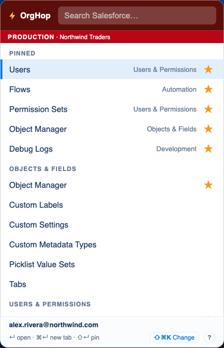
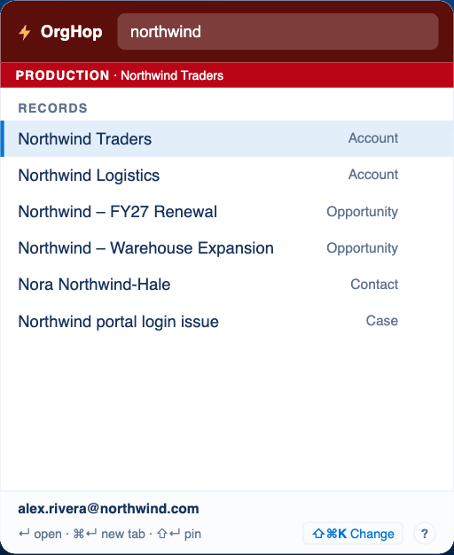
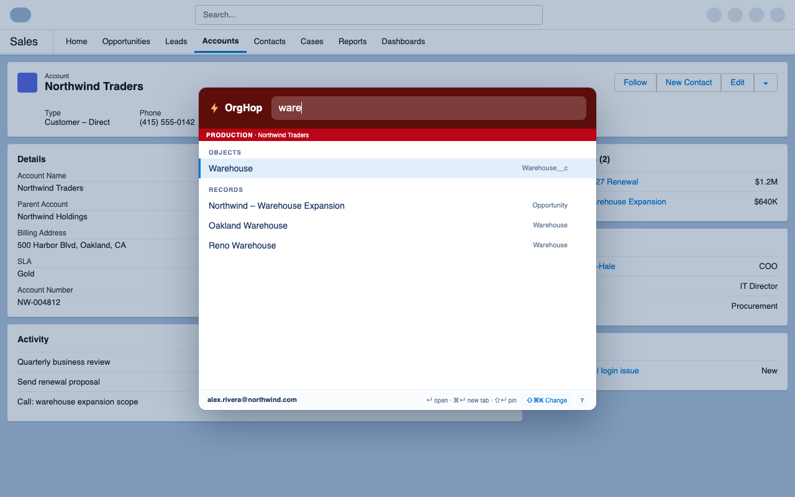
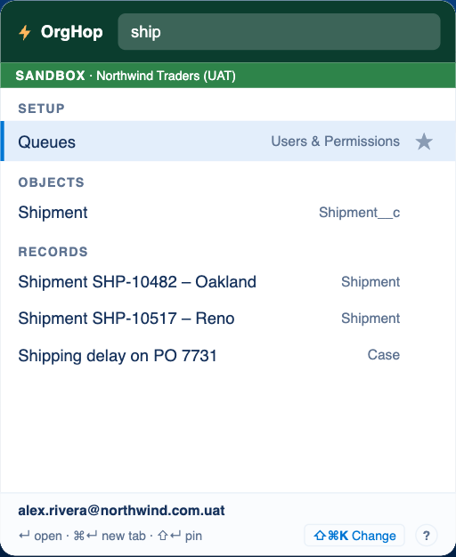

Every Setup page,
one keystroke away.
Press Alt S, type a few letters and press Enter. OrgHop finds Setup pages, apps, objects and records in the org you're already signed in to.
- No servers
- No accounts
- No analytics or ads

- Open OrgHopClick the toolbar icon or press Alt+S on any Salesforce tab.
- Type a few letters"perm", "flow", "debug" or a record name. Results appear as you type.
- Press EnterThe page opens in your org's tab. Cmd or Ctrl+Enter opens a new tab.
Features
Stop clicking through Setup
OrgHop puts your whole org behind one search box, so you spend your time on the change, not on finding the page.
Search every Setup page
Users, Flows, Permission Sets, Object Manager, Debug Logs and more, grouped into categories such as Automation, Security and Development.
- Words match in any order, so "perm set" finds Permission Sets
- Open in the current tab, or a new one with Cmd or Ctrl+Enter
- Works in Lightning orgs, production and sandboxes
Find records, apps and objects
Search accounts, contacts, opportunities, cases and custom objects in the org you're signed in to, right next to your Setup results.
- Results show the object type, so you open the right one
- Open a Lightning app, or an object's page in Object Manager
- Uses your own permissions, so you only see what you can already see

Search without leaving the page
Press Cmd Shift K on macOS, or Ctrl Shift K on Windows and Linux, and the same search opens as an overlay on top of the Salesforce page you're on.
- Spotlight-style panel that keeps your place on the page
- Typing in it never triggers Salesforce's own shortcuts
- Change either shortcut to whatever suits you

Always know which org you're in
Production gets a red banner and sandboxes get a green one, with the org name beside it. You'll never change the wrong org by accident.
- Your username is shown in the footer, which helps with "Log in as"
- Each org's lists are kept separate

Pin your favorites
Press Shift+Enter or click the star to keep the pages you open every day at the top. Pins sync through your Chrome profile.
Keyboard first
Arrow keys to move, Enter to open, Cmd or Ctrl+Enter for a new tab, Shift+Enter to pin. A middle click works too.
Fast and light
No build, no frameworks, no tracking scripts. Lists are cached for the session, so results show up instantly.
Privacy
Your data stays between you and your org
OrgHop uses the Salesforce login you already have and talks only to your own org. The developer never receives any of your data.
No servers
Everything runs in your browser. There is no OrgHop backend.
No accounts
Nothing to sign up for. Your Salesforce session is all it needs.
No analytics or ads
No tracking, no telemetry, nothing sold or shared.
Cleared on close
Cached lists live in session storage. Only your pins are kept.
Guides
Get more out of OrgHop
Short how-tos for the things people ask about most.
Keyboard shortcuts
Every key OrgHop understands, and how to change the ones that open it.
Read the guide →Pin your favorite pages
Keep the Setup pages you use every day at the top of the list.
Read the guide →All guides
More guides are on the way. Tell us what you'd like to see in a bug report or feature request.
Browse guides →Hop to any page in your org
OrgHop is free for Chrome and other Chromium browsers.
Follow release notes to hear when it's live.